Manual de uso — GanaderíaApp
Esta guía explica, paso a paso y sin tecnicismos, cómo usar la aplicación para llevar el control de tu ganadería: animales, partos, ventas, gastos, empleados y resultados anuales. Empieza por la guía rápida si nunca has abierto la app; cuando ya manejes lo básico, salta al manual completo.
Guía rápida
Lo mínimo que necesitas saber para empezar a usar la app en 5 minutos.
¿Qué es GanaderíaApp?
Es una aplicación para llevar la contabilidad y el inventario de una ganadería: saber cuántos animales tienes, qué les ha pasado (partos, pesajes, ventas, muertes), cuánto dinero entra y sale, y qué resultado da el año. Funciona en el ordenador y en el móvil, y los datos se guardan en tu propio dispositivo (no en una nube de terceros, salvo que lo conectes tú con Google Drive).
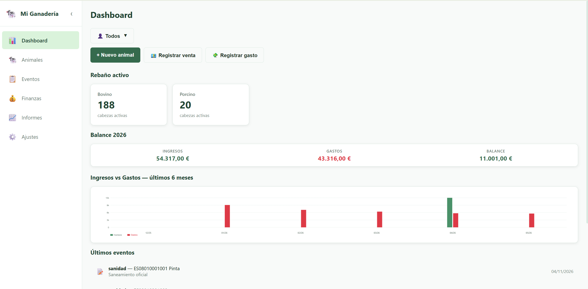
Qué puede hacer por ti
- Llevar el registro del rebaño: cada animal con su crotal, especie, raza, sexo, peso, madre y explotación.
- Anotar lo que pasa en el día a día: partos, pesajes, ventas, muertes, tratamientos…
- Controlar el dinero: ingresos por ventas, gastos de pienso, veterinario, combustible, etc.
- Sacar informes: cuenta de resultados del año, gastos por categoría e inventario del rebaño, listos para imprimir.
- Compartir entre varios titulares: si la explotación está a nombre de varias personas, la app reparte los gastos comunes proporcionalmente y cada uno tiene su propio balance.
- Copia de seguridad y sincronización: exportas tus datos a un fichero, o los sincronizas entre el móvil y el ordenador con Google Drive.
Instalar la app en el móvil
Aunque se usa desde el navegador, se puede instalar como si fuera una app normal y abrirla desde un icono en la pantalla de inicio. Así funciona también sin conexión.
En Android (Chrome)
- Abre la web de la app en Chrome.
- Toca el botón de menú (los tres puntos arriba a la derecha).
- Elige “Añadir a pantalla de inicio” o “Instalar app”.
- Confirma. Aparece un icono nuevo (🐄) en el escritorio del móvil.
En iPhone (Safari)
- Abre la web en Safari.
- Toca el botón Compartir (cuadrado con flecha hacia arriba).
- Baja y elige “Añadir a pantalla de inicio”.
- Confirma. El icono aparece junto a tus otras apps.

Primer uso (5 minutos)
Estos son los pasos recomendados la primera vez que abres la app, en orden:
| Paso | Qué hacer | Dónde |
|---|---|---|
| 1 | Pon el nombre de tu explotación principal | Ajustes → Mi explotación |
| 2 | Si la explotación es compartida, añade los titulares | Ajustes → Titulares |
| 3 | Si tienes varias parcelas/fincas, añádelas como “explotaciones” | Ajustes → Explotaciones |
| 4 | Revisa o crea las categorías de ingreso y gasto | Ajustes → Categorías |
| 5 | Da de alta tus primeros animales | Animales → + Nuevo animal |
| 6 | (Opcional) Conecta Google Drive para sincronizar con el móvil | Ajustes → Google Drive |
Y ya está. A partir de aquí solo tienes que ir anotando lo que pasa cada día.
Las 5 tareas más frecuentes
1. Dar de alta un animal nuevo
- Pulsa en Animales en el menú lateral o inferior.
- Pulsa + Nuevo animal arriba a la derecha.
- Rellena al menos: Crotal, Especie y Sexo.
- Pulsa Guardar.
2. Anotar un evento (parto, pesaje, venta, muerte…)
- En Animales, busca al animal por crotal.
- Pulsa + Evento en su fila.
- Elige el tipo (parto, peso, venta, compra, muerte, sanidad, otro), pon la fecha y los datos que pida (peso, importe, etc.).
- Guardar. Si el evento implica dinero (venta o compra), se crea automáticamente un ingreso o gasto en Finanzas.
3. Vender un lote de varios animales a la vez
- En Animales, marca con la casilla los animales del lote.
- Abajo aparece una barra verde con el número de seleccionados. Pulsa Aplicar evento.
- Elige tipo Venta, pon la fecha y el importe total del lote (no por animal).
- Aplicar. Los animales pasan a “vendido” y se anota un único ingreso por el total.
4. Apuntar un gasto (pienso, veterinario, combustible…)
- Ve a Finanzas en el menú.
- Pulsa + Gasto arriba a la derecha.
- Pon el importe, la fecha y elige una categoría (Pienso, Veterinario, etc.).
- Si el gasto es solo de un titular, márcalo. Si no, déjalo en “común” y la app lo repartirá entre todos.
- Guardar.
5. Ver cómo va el año
- Pulsa Informes en el menú.
- Elige el año arriba a la izquierda.
- Verás: total ingresos, total gastos, balance, desglose por categorías e inventario del rebaño.
- Pulsa 🖨 Imprimir si quieres una copia en papel o en PDF.
Manual completo
Explicación detallada de cada módulo, con todos los campos, opciones y casos especiales.
La pantalla principal
La app está organizada en seis módulos a los que se accede siempre desde el mismo menú:

| Icono | Módulo | Para qué |
|---|---|---|
| 📊 | Dashboard | Vista general: rebaño, balance del año y eventos recientes. |
| 🐄 | Animales | Ficha de cada animal, altas, bajas y selección por lotes. |
| 📋 | Eventos | Listado y filtrado de todo lo que ha pasado en el rebaño. |
| 💰 | Finanzas | Ingresos y gastos detallados con sus categorías. |
| 📈 | Informes | Cuenta de resultados e inventario, listos para imprimir. |
| ⚙️ | Ajustes | Configuración: titulares, explotaciones, categorías, copia de seguridad… |
El filtro de titular
En el Dashboard, Animales, Eventos, Finanzas e Informes hay un desplegable arriba con el nombre del titular activo. Sirve para ver los datos como si la explotación fuera solo de esa persona: sus animales, sus ingresos, sus gastos (más la parte proporcional de los gastos comunes).
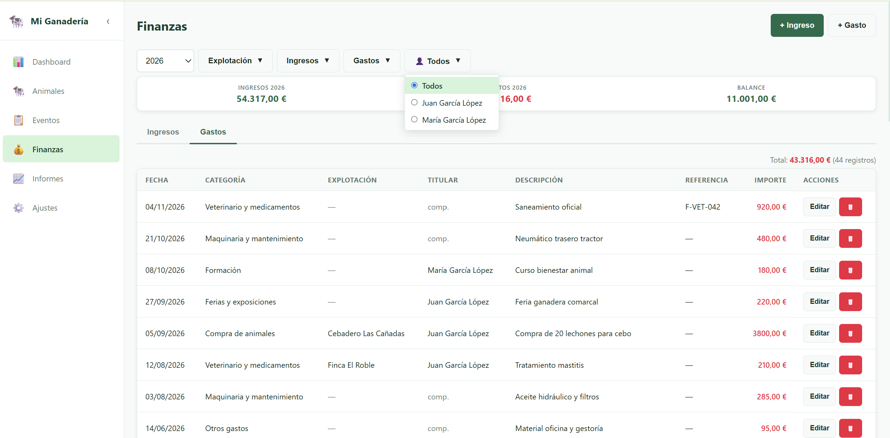
📊 Dashboard
Es la pantalla de inicio. De un vistazo te dice cómo va la explotación.

Acciones rápidas
Tres botones grandes en lo alto:
- + Nuevo animal — abre el formulario para dar de alta un animal sin tener que ir a Animales.
- 💶 Registrar venta — apunta un ingreso directamente.
- 💸 Registrar gasto — apunta un gasto.
Rebaño activo
Tarjetas con el número de cabezas activas por especie (vacuno, ovino, caprino, etc.). Si filtras por titular, solo cuenta los suyos.
Balance del año
Tres números grandes:
- Ingresos (en verde) — total facturado este año.
- Gastos (en rojo) — total gastado este año.
- Balance — diferencia: si está en verde es beneficio, en rojo es pérdida.
Gráfico de 6 meses
Dos barras por mes (verde = ingresos, roja = gastos) de los últimos 6 meses. Sirve para detectar rachas y temporadas: por ejemplo, gastos altos en primavera por la siembra, ingresos altos en otoño por ventas de terneros.
Últimos eventos
Los 5 últimos hechos anotados en el rebaño, con su fecha y el animal al que afectan.
🐄 Animales
El corazón de la app. Aquí está la ficha de cada animal del rebaño.
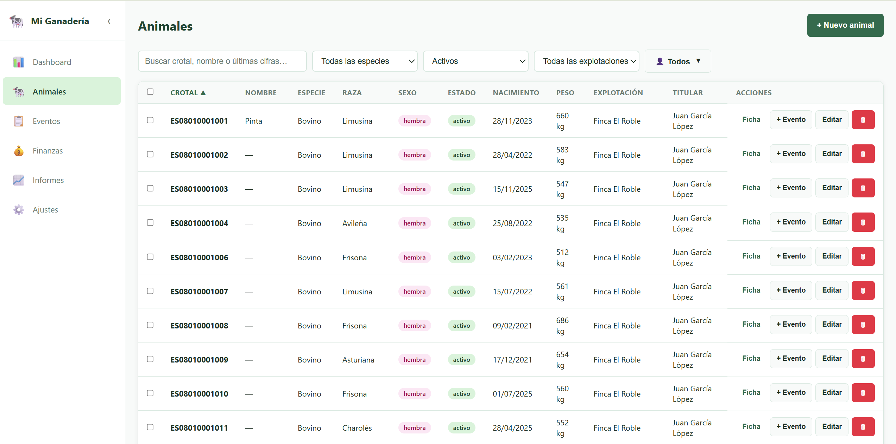
Buscar y filtrar
Arriba del listado tienes:
- Buscador: escribe el crotal, el nombre o las últimas cifras del crotal. Por ejemplo, “1234” encuentra
ES0801001234. - Filtro de especie: vacuno, ovino, caprino, etc.
- Filtro de estado: por defecto muestra solo Activos. Puedes elegir Todos, Vendidos o Muertos.
- Filtro de explotación (si tienes más de una).
- Filtro de titular.
Dar de alta un animal
Pulsa + Nuevo animal. Estos son los campos:
| Campo | Obligatorio | Notas |
|---|---|---|
| Crotal | Sí | Identificador único del animal. |
| Nombre | No | Apodo opcional (“La Pinta”, “Lola”…). |
| Especie | Sí | Vacuno, ovino, caprino, etc. |
| Raza | No | Limusina, Avileña, Merina… |
| Sexo | Sí | Macho o hembra. |
| Estado | — | Por defecto “Activo”. Solo se cambia a mano si pones un animal heredado ya vendido. |
| Fecha de nacimiento | No | Si la sabes, mejor. La app calcula la edad sola. |
| Madre | No | Empieza a escribir el crotal o el nombre y aparecen las hembras candidatas. Útil para llevar líneas familiares. |
| Origen | No | Nacimiento (nacido en la explotación) o Compra. |
| Explotación | No | Si tienes varias fincas, asigna a cuál pertenece. |
| Titular | No | Si la explotación es compartida. |
| Notas | No | Cualquier observación libre. |
Ver la ficha de un animal
Pulsa Ficha (o Ver ficha en móvil). Se abre una ventana con todos sus datos y, debajo, el historial de eventos: una línea cronológica con todo lo que se le ha anotado (partos, pesajes, tratamientos, etc.).
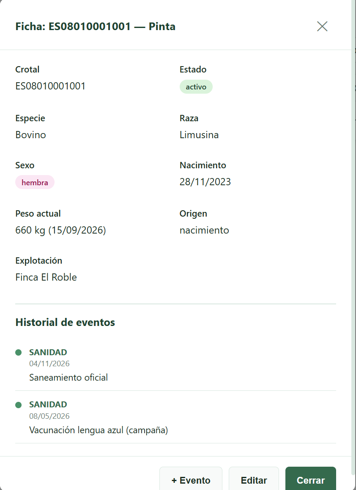
Registrar un evento
Pulsa + Evento en la fila del animal. Tipos de evento disponibles:
- 🍼 Parto — nacimiento de una cría.
- ⚖ Peso — pesaje. Se actualiza el peso actual del animal.
- 💶 Venta — venta. Cambia el estado a “vendido” y crea un ingreso en Finanzas.
- 🛒 Compra — compra. Crea un gasto en Finanzas.
- 💀 Muerte — baja por muerte. Cambia el estado a “muerto”.
- 💉 Sanidad — vacunación, tratamiento, visita del veterinario…
- 📝 Otro — para cualquier cosa que no encaje en las anteriores.
Operaciones por lotes (varios animales a la vez)
Si tienes que vender un lote, pesar todo un rebaño o aplicar un tratamiento sanitario al grupo, no hace falta repetir el proceso animal por animal:
- Marca las casillas de los animales del lote (o pulsa la casilla de la cabecera para marcarlos todos).
- Abajo del listado aparece una barra verde con el número de seleccionados.
- Pulsa Aplicar evento.
- Elige el tipo y los datos. Para ventas/compras, el importe es el total del lote, no por animal.
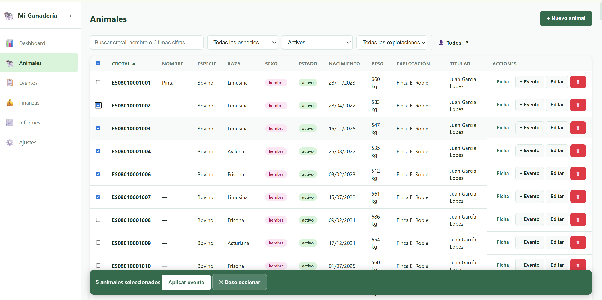
📋 Eventos
Es el diario de bordo del rebaño. Lo que en Animales ves “animal por animal”, aquí lo ves todo junto y filtrable: “qué pasó esta semana”, “cuántos partos hubo este año”, “qué pesajes hice en marzo”…
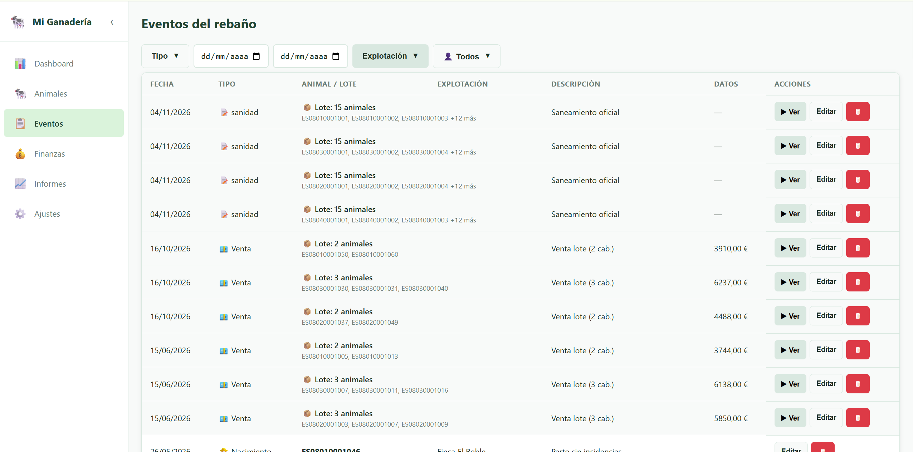
Filtros disponibles
- Tipo de evento: parto, peso, venta, compra, etc. (puedes marcar varios).
- Desde / Hasta: rango de fechas.
- Explotación: si tienes varias.
- Titular.
El botón ✕ Limpiar aparece cuando hay algún filtro aplicado y los quita todos a la vez.
Lotes
Cuando un evento se ha aplicado a varios animales a la vez (por ejemplo, una venta conjunta), se muestra como una sola fila con un botón ▶ Ver que despliega los animales individuales del lote.
Sobre un lote puedes:
- Editar el lote completo: cambiar fecha, importe total, descripción… Los cambios se aplican a todos sus eventos.
- Eliminar el lote: borra todos los eventos del lote y la transacción asociada. Si era una venta, los animales vuelven a “activo”.
💰 Finanzas
Aquí está la contabilidad: ingresos y gastos. Algunos los crea la app sola cuando registras ventas/compras desde Animales o Eventos; otros los añades a mano (combustible, pienso, vacunas, subvenciones, etc.).
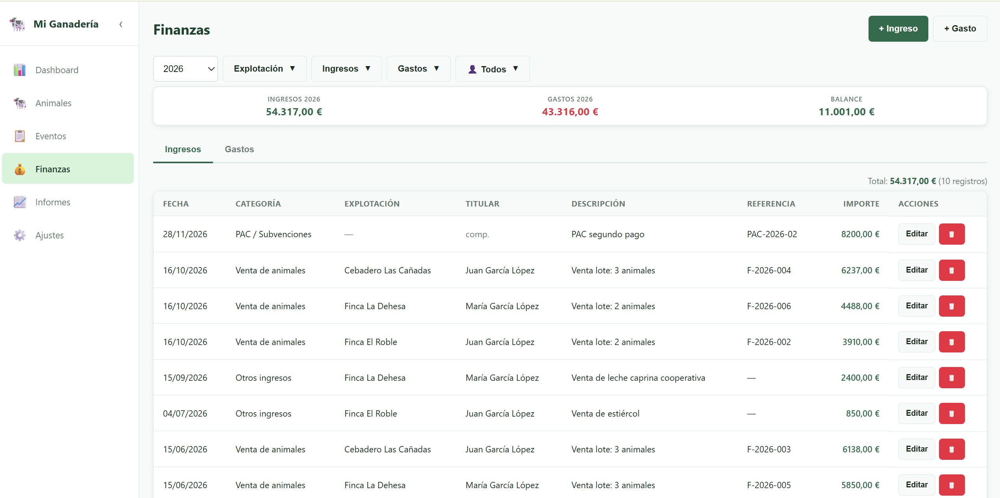
Filtros
- Año: año al que pertenece la transacción.
- Explotación.
- Categorías de ingreso / de gasto: marcas las que quieres ver.
- Titular.
Crear un ingreso o un gasto a mano
- Pulsa + Ingreso o + Gasto.
- Rellena los campos:
| Campo | Obligatorio | Notas |
|---|---|---|
| Importe | Sí | En euros, sin signo. La pestaña ya distingue si es ingreso o gasto. |
| Fecha | Sí | Por defecto, hoy. |
| Categoría | Sí | De la lista. Si no tienes la que necesitas, créala en Ajustes → Categorías. |
| Descripción | No | Texto libre. Útil para luego recordar a qué se refería. |
| Referencia | No | Número de factura, albarán o lo que te sirva. |
| Explotación | No | Si tienes varias. |
| Titular | No | Si lo dejas vacío y hay varios titulares, el gasto se considera común y se reparte proporcionalmente entre todos los titulares en los informes. |
Editar o borrar
Cada fila tiene los botones Editar y 🗑. Las transacciones creadas automáticamente por una venta/compra de animales también se pueden editar y borrar; si las borras, el evento del animal queda sin importe (pero el animal mantiene su estado “vendido”).
📈 Informes
El módulo de informes da una visión anual y agregada de la explotación. Está pensado para imprimir y archivar, o para enseñárselo al gestor a final de año.
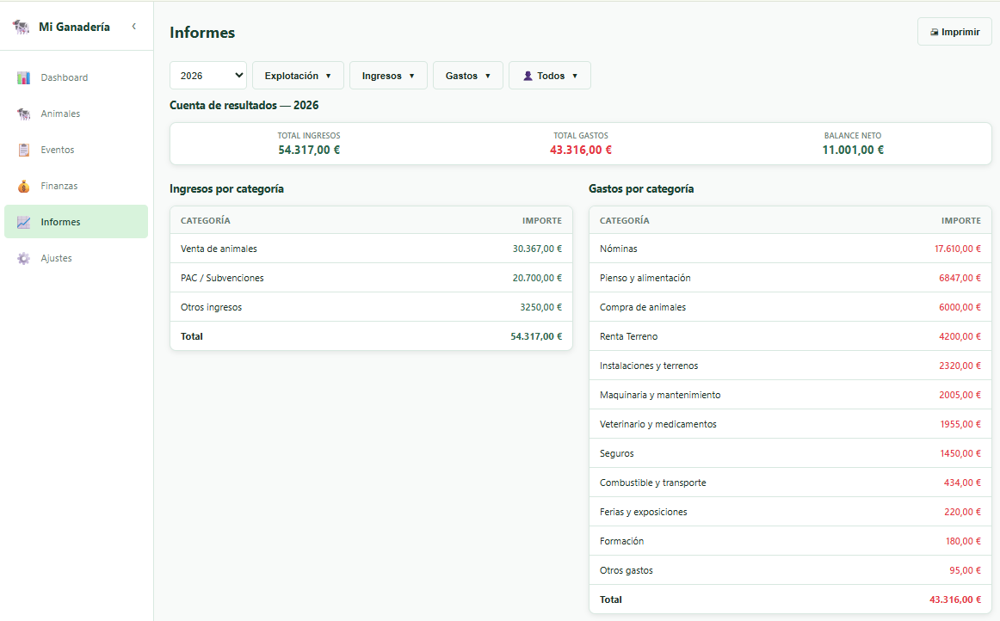
Qué incluye
- Cuenta de resultados: ingresos, gastos y balance del año seleccionado.
- Ingresos por categoría: tabla con cuánto entró por cada concepto (ventas de animales, subvenciones, etc.).
- Gastos por categoría: lo mismo pero de los gastos.
- Desglose de gastos: gráfico circular para ver de un vistazo a qué se va el dinero.
- Inventario del rebaño: cuántos animales hay por especie y por estado (activos, vendidos, muertos).
Filtros
Los mismos que en Finanzas: año, explotación, categorías y titular. Cuando alguno está aplicado, aparece un cartel Filtrado al lado del título.
Imprimir
El botón 🖨 Imprimir abre el diálogo de impresión del sistema. Desde ahí puedes mandarlo a una impresora o guardarlo como PDF (la opción “Guardar como PDF” suele estar disponible en cualquier ordenador moderno).
⚙️ Ajustes
La pantalla de configuración. Es lo primero que conviene revisar al empezar.
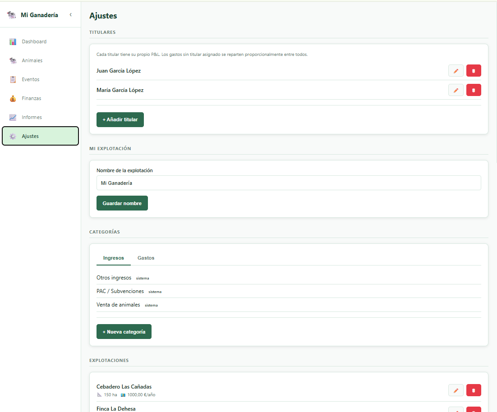
Titulares
Un titular es una persona dueña (total o parcialmente) de la explotación. Se usa si la ganadería está compartida entre varios socios o miembros de una familia.
Cada titular tiene su propio balance: la app calcula automáticamente cuánto le toca de cada gasto común.
- Para añadir uno: + Añadir titular y pon el nombre.
- Los animales se asignan a un titular desde la ficha del animal (campo Titular).
- Los ingresos y gastos también se pueden asignar a un titular concreto. Si no se asigna ninguno, son comunes y se reparten.
Mi explotación
Aquí pones el nombre principal que aparece en la cabecera de la app (por ejemplo, “Ganadería González”).
Categorías
Las categorías sirven para agrupar ingresos y gastos. La app trae unas por defecto (Venta de animales, Pienso, Veterinario, Combustible…) pero puedes añadir las que necesites.
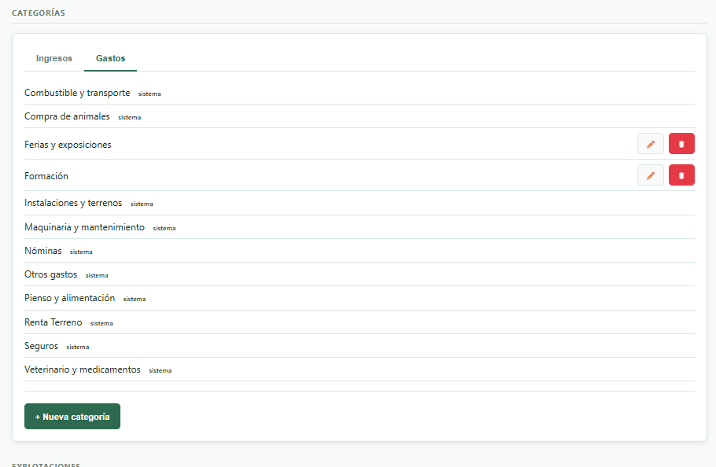
- Las marcadas como sistema no se pueden borrar ni renombrar (son las que usa la app automáticamente para ventas y compras de animales).
- Las demás se pueden editar (✏️) o eliminar (🗑). Si eliminas una categoría que estaba en uso, esas transacciones quedan como “Sin categoría”.
Explotaciones
Si tu ganadería tiene varias fincas, parcelas o cebaderos que quieres distinguir, puedes darlos de alta como explotaciones. Cada animal y cada transacción se pueden asignar a una de ellas, y luego puedes filtrar por explotación en Animales, Eventos, Finanzas e Informes.
Cambiar el nombre de una explotación actualiza la cabecera principal de la app si era la elegida como “explotación activa”.
Empleados
Para llevar el control de los empleados de la ganadería: nombre, salario y % de Seguridad Social. Cuando registras un salario o un pago a la Seguridad Social en Finanzas, se vincula al empleado.
El campo % Seguridad Social empleador (arriba de la sección) es el porcentaje general que se aplica a los salarios para calcular la cuota patronal. Por defecto está en 30 %.
Copia de seguridad
Tus datos viven en el navegador del dispositivo. Si pierdes el móvil, los desinstalas o cambias de ordenador, los datos se pierden salvo que tengas una copia. Hay tres opciones para guardarlos:
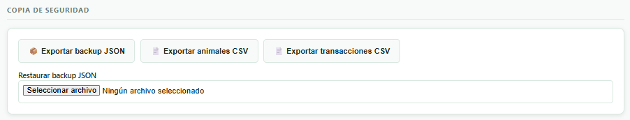
- 📦 Exportar backup JSON: descarga un fichero con todo: animales, eventos, transacciones, ajustes, categorías… Es lo que se restaura.
- 📄 Exportar animales CSV: hoja de cálculo con la lista de animales (para abrir en Excel, LibreOffice o Google Sheets).
- 📄 Exportar transacciones CSV: hoja de cálculo con todos los ingresos y gastos.
- Restaurar backup JSON: elige un fichero JSON exportado previamente. Atención: reemplaza completamente los datos actuales.
Google Drive (opcional)
Si quieres que el ordenador y el móvil tengan siempre los mismos datos, puedes vincular la app a tu Google Drive personal. La app guarda allí una copia que se actualiza al sincronizar.
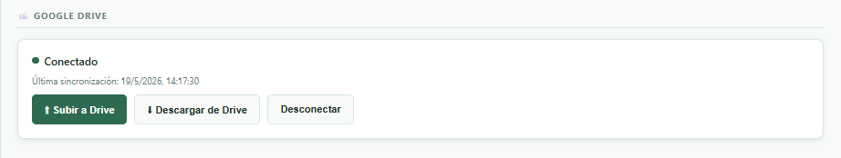
- Pulsa 🔗 Conectar con Google Drive.
- Inicia sesión con tu cuenta Google y acepta los permisos.
- Cuando estés conectado, usa:
- ⬆ Subir a Drive en el dispositivo donde has hecho cambios.
- ⬇ Descargar de Drive en el otro dispositivo para traer esos cambios.
Zona peligrosa
Preguntas frecuentes
¿Dónde se guardan mis datos?
En la memoria local del navegador del dispositivo que estés usando. Es similar a cómo el WhatsApp Web guarda tus chats: ni Anthropic, ni el desarrollador, ni nadie tiene acceso. Si además conectas Google Drive (opcional), se guarda una copia en tu Drive personal.
¿Funciona sin internet?
Sí. La primera vez necesitas conexión para abrirla, pero a partir de ahí puedes usarla sin cobertura. Lo único que necesita internet es la sincronización con Google Drive.
¿Puedo usar el móvil y el ordenador al mismo tiempo?
Sí, pero la sincronización entre los dos pasa por Google Drive y es manual: hay que pulsar “Subir” en uno y “Descargar” en el otro. Si trabajas en los dos sin sincronizar, pueden quedar desfasados.
Vendí 20 corderos juntos. ¿Tengo que crear 20 ingresos?
No. En Animales, marca los 20 con la casilla, pulsa Aplicar evento, elige “Venta” y pon el importe total. La app marca los 20 como vendidos y crea un solo ingreso por el total del lote.
Borré un animal por error. ¿Se puede recuperar?
No directamente desde la app, pero si tienes un backup JSON anterior al borrado, puedes restaurarlo desde Ajustes → Copia de seguridad → Restaurar backup JSON. Ten en cuenta que eso restaurará todos los datos al momento del backup, no solo el animal.
El balance del año no me cuadra.
Revisa estas tres cosas:
- ¿Está activo algún filtro? El cartel Filtrado aparece arriba si hay filtros aplicados. Pulsa ✕ Limpiar para verlo todo.
- ¿Tienes el titular correcto seleccionado? El filtro de titular afecta a Informes.
- ¿Están bien las fechas? Una transacción con fecha del año anterior no entrará en el año actual.
¿Puedo cambiar la moneda?
De momento, no. Toda la app trabaja en euros (€).
¿Cuántos animales/eventos puedo guardar?
En la práctica, miles. El navegador limita el espacio (suelen ser cientos de megabytes), pero eso da para muchísimos años de explotación normal.
¿Cómo paso los datos a otra app o a mi gestor?
Usa Ajustes → Exportar animales CSV o Exportar transacciones CSV. Esos ficheros se abren directamente en Excel, LibreOffice o Google Sheets. Para enviárselos al gestor, basta con adjuntarlos por correo.
Glosario
- Activo
- Animal vivo y todavía en la explotación. Es el estado por defecto al darlo de alta.
- Backup
- Copia de seguridad. Fichero (JSON) que contiene todos tus datos y que puede usarse para restaurar la app si pasa algo.
- Balance
- Diferencia entre ingresos y gastos. Positivo = ganancia. Negativo = pérdida.
- Categoría
- Etiqueta que agrupa ingresos o gastos por tipo: pienso, veterinario, venta de animales, subvención, etc.
- Crotal
- Identificador único de cada animal (la chapa de la oreja). En la app es obligatorio.
- CSV
- Formato de fichero de hoja de cálculo. Se abre en Excel, LibreOffice o Google Sheets.
- Cuenta de resultados
- Resumen anual de ingresos, gastos y balance. Lo encuentras en Informes.
- Evento
- Cualquier hecho que se anota sobre un animal o un lote: parto, pesaje, venta, compra, muerte, tratamiento sanitario u “otro”.
- Explotación
- Una finca, parcela o cebadero. Si tienes varias, puedes asignar animales y transacciones a cada una.
- JSON
- Formato del fichero de backup completo. No se abre tan fácil como un CSV, pero contiene todo.
- Lote
- Conjunto de animales sobre los que se aplica el mismo evento a la vez (por ejemplo, vender 20 corderos juntos).
- Titular
- Persona dueña (total o parcialmente) de la explotación. Si hay varios, cada uno tiene su propio balance y los gastos sin titular asignado se reparten.
- Transacción
- Un ingreso o un gasto registrado en Finanzas.
Manual de GanaderíaApp · revisa siempre la versión en Ajustes al pie de la página.